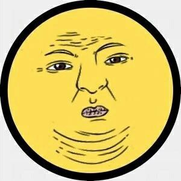

Святослав Скалько
Программист
Пара слов обо мне
Привет ✌
В данный момент я учусь в магистратуре МФ МГТУ им. Н.Э. Баумана по направлению «Информатика и вычислительная техника».
В прошлом году защитил диплом бакалавра на тему «Разработка очень сложного программного комплекса для супер-важной цели». Работа была высоко оценена комиссией.
Также я уже успела поработать инженером в одном провайдере в Пушкино, но в будущем планирую стать разработчиком сложных программных комплексов и систем.
Мои навыки
Сортировать
HTML
CSS
Python
C++
Мои интересы
Наибольший интерес для меня в данный момент представляет программирование и изучение искусственного интеллекта.
Но помимо учебы и работы я также люблю играть в компьютерные и настольные игры, читать разную литературу и кататься на горных лыжах.